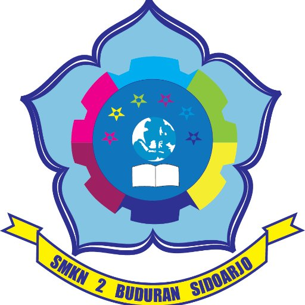

Sekolah.

Sekolahku berada pada SMKN 2 Buduran. Saya di SMKN 2 Buduran
memilih jurusan RPL,karena cita cita saya ingin manjadi seorang
programmer.
Saya bersyukur karena saya bisa masuk ke SMKN 2 Buduran. Karena
banyak disana teman teman saya yang tidak keterima di SMKN 2
Buduran
Saya di sekolah sekarang ini menempati kelas 11 RPL yang wali
kelasnya yaitu pak Jaka.
Didalam kelas saya terdapat 36 siswa. Laki laki 30 siswa dan
perempuan 6 siswa. Saya menepati dengan nomeor absen 18.
teman teman saya sangat bermacam macam hobinya dan kemampuannya
atau skill codingnya. Tetapi itu tidak masalah karena kita akan
tetap
berteman walaupun menyukai hal yang berbeda beda
Disekoalah saya memiliki bermacam macam jurusan keahlian yang terdapat pada tabel berikut :
| NO | Kelas | ||
|---|---|---|---|
| X | XI | XII | |
| 1 | RPL | ||
| 2 | MULTIMEDIA | ||
| 3 | PERKANTORAN | ||
| 4 | PERBANKAN | ||
| 5 | BISINIS DARING | ||
| 6 | AKUTANSI | ||
untuk info selangkapnya klik SMKN2BUDURAN